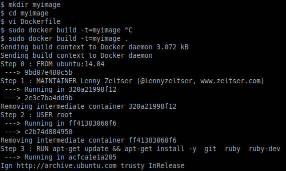

Please contribute to the REMnux collection of Docker images of malware analysis applications. You’ll get a chance to experiment with Docker, become a master at setting up an application of your choice and expand the set of tools that other professionals can conveniently run for examining malicious software.
As a starting point, read the REMnux page regarding Docker and the notion of containers. Also, familiarize yourself with the approaches to running images that have already been created as part of the REMnux project. Next, review the guidelines and examples below. Lastly, read Docker’s documentation for building images using a Dockerfile.
Documenting the Build Steps in Dockerfile
A properly-formatted Dockerfile describes the steps necessary to build and configure your application inside a Docker container in a repeatable and unattended manner. To get a sense for the structure of such files, browse the REMnux repository of Dockerfiles on Github. To explain how to build such files, we’ll use the JSDetox Dockerfile as an example.
The beginning of your Dockerfile should include comments that state which application is included in the image, who created the app and where it can be obtained in a traditional form. The comments should explain how the use of the image should run it. For instance:
# This Docker image encapsulates the JSDetox malware analysis tool by @sven_t
# from http://www.relentless-coding.com/projects/jsdetox
#
# To run this image after installing Docker, use the following command:
# sudo docker run --rm -p 3000:3000 remnux/jsdetox
# Then, connect to http://localhost:3000 using your web browser.
REMnux images use a minimal Docker image of Ubuntu 14.04 as a starting point, as designated by the FROM directive below. The MAINTAINER tag explains who created and/or maintains the Dockerfile:
FROM ubuntu:14.04
MAINTAINER Lenny Zeltser (@lennyzeltser, www.zeltser.com)
The RUN directive below tells Docker which commands to run inside the container when building the image. Your Dockerfile file should include the apt-get update command, followed by apt-get install -y and a listing of the Ubuntu packages that the application requires. Remember that the starting point for the image is a minimal Ubuntu installation, so assume that a given package is not present unless you explicitly install it:
USER root
RUN apt-get update && apt-get install -y \
git \
ruby \
ruby-dev \
bundler \
build-essential && \
rm -rf /var/lib/apt/lists/*
The USER directive above makes sure that Docker will run the apt-get commands as root. Note that the RUN command above links several commands together using && and employs \ to break this sequence of commands into multiple lines for better readability. We’re linking several commands in this manner to slightly minimize the size of the resulting Docker image file. This is also the reason why we include the rm command to get rid of the package listing.
The followng RUN directive sets up the non-root user creatively named “nonroot”, so that commands and applications that don’t require root provileges have a more restricted environment within which to run. Note that just as before, we’re using && to string together multiple commands, separating lines with \:
RUN groupadd -r nonroot && \
useradd -r -g nonroot -d /home/nonroot -s /sbin/nologin -c "Nonroot User" nonroot && \
mkdir /home/nonroot && \
chown -R nonroot:nonroot /home/nonroot
The next set of directives tells Docker to start running commands using the newly-set up “nonroot” user, defines the working directory to match that user’s home directory and retrieves the code for the application we’re installing (JSDetox, in this case):
USER nonroot
WORKDIR /home/nonroot
RUN git clone https://github.com/svent/jsdetox.git
The following instructions will install the application using the bundle install command, according the JSDetox installation instructions. Note that these instructions need to run as root to have the ability to copy the application’s files into protected locations:
USER root
WORKDIR /home/nonroot/jsdetox
RUN bundle install
The final set of directives below tells Docker to switch back to using the “nonroot” user and sets the working directory to the location from which JSDetox should be launched. It also specifies which command Docker should run when this image is launched without any parameters:
USER nonroot
WORKDIR /home/nonroot/jsdetox
CMD ./jsdetox -l $HOSTNAME 2>/dev/null
By default, JSDetox listens on “localhost”. To give us the opportunity to connect to JSDetox from outside of its container, the command above launches the tool with the -l parameter and specifies the $HOSTNAME varilable. This environment variable is automatically defined to match the hostname that Docker will assign when this container runs, which will allow JSDetox to listen on the network interface accessible from our underlying host.
Building the App Image from the Dockerfile
Your underlying system will need to be connected to the Internet when you build the Docker image, so that it can retrieve the necessary files when installing the application. Also, you’ll need to understand what is involved in setting up the app, including knowing its dependencies and configuration nuances.
It’s difficult to create a Dockerfile, such as the one we reviewed above, in one shot. Inevitably, some command will run in a manner that you don’t expect, preventing the application from installing properly. Before documenting your steps in Dockerfile, consider launching the base ubuntu:14.04 container like this:
sudo docker run --rm -it ubuntu:14.04 bash
Then, manually type and write down the commands into the container’s shell to install the desired application. Once you’ve validated that a specific sequence of commands works, start building a Dockerfile by adding your instructions one or two at a time to validate that they work as intended.
Once you’ve created a Dockerfile that contains the desired directives, go to the directory where the file is present and run the following command, where “image-name” is he name you’d like to assign to the image file you’re building:
sudo docker build -t=image-name .
Building the image can take some time, depending on the speed of your system and Internet connection, as Docker downloads the necessary packages and, if appropriate, compiles code.

After Docker builds the image, you can run it using the following command to get a shell in the container where your application has been installed:
sudo docker run --rm -it image-name bash
Of course, “image-name” in the command above should correspond to the name you’ve assigned to the image. The --rm parameter in the command above directs Docker to automatically remove the container once it finishes running. This gets rid of any changes the application may have made to the local environment when it ran, but does not remove the cached image file that represents the app on your system. The -it parameter requests that Docker open an interactive session to the container and assign a pseudo-TTY to it so you can interact with it.
Once you have built and tested your Dockerfile, share it with Lenny Zeltser, so he can review it and, if appropriate, incorporate your contribution into the REMnux repository on Github and on the Docker Hub Registry.
Facilitating File System and Network Interactions
The container will be isolated from the host system: by default it will be able to communicate over the network in the outbound direction, but won’t accept inbound traffic. Also, if the container is invoked with the --rm parameter, its contents will disappear after it stops running. When building the image, you might need to anticipate the user’s need to communicate with the app inside the container over the network or to pass files in and out of the container.
Accessing Network Ports in the Container
In the JSDetox example above, the application listens on TCP port 3000. In its default configuration, JSDetox listens on localhost, which would make its port inaccessible from outside its Docker container. This is why we launched JSDetox with the -l $HOSTNAME parameter—this directed the application to listen on the network interface that could be accessed from outside the container.
Unless the user explicitly requests access to the container’s port when launching its image, no ports will be accessible from the underlying system. Fortunately, Docker allows us to use the -p parameter to specify that a specific port within the container should be accessible from outside the container. For example, to access JSDetox’ port 3000, the user needs to specify -p 3000:3000. This maps the container’s port 3000 to the underlying host’s port 3000, allowing the user to communicate with JSDetox by connecting to http://localhost:3000 using a web browser.
Sharing Files with the Container
There is no need to share files with JSDetox inside the container by using the file system, because this application interacts with the user through the web browser. In contrast, some files expect the user to provide input or share output via the file system. Docker supports the -v parameter to share a directory between the underlying host and the container.
For example, let’s say we wanted to share a folder with the container running the Rekall Memory Forensic Framework, which is available from the REMnux Docker repository. If the memory image file that you’d like to analyze is located on your underlying host in the ~/files directory, you could share that directory with the Rekall container by specifying -v ~/files:/home/nonroot/files when running the application’s image:
sudo docker run --rm -it -v ~/files:/home/nonroot/files remnux/rekall bash
This maps the local ~/files directory to the /home/nonroot/files directory inside the container. The Rekall image is built to run the user-designated command (e.g., bash) as the user “nonroot”. To ensure that the non-root user has access to the underlying hosts ~/files directory, the user of the app will need to make that directory world-accessible (i.e., chmod a+xwr ~/files) before launching the container.
The comments in the beginning of your Dockerfile should provide guidelines for how the image should be launched to ensure that the user can provide files and communicate with ports.